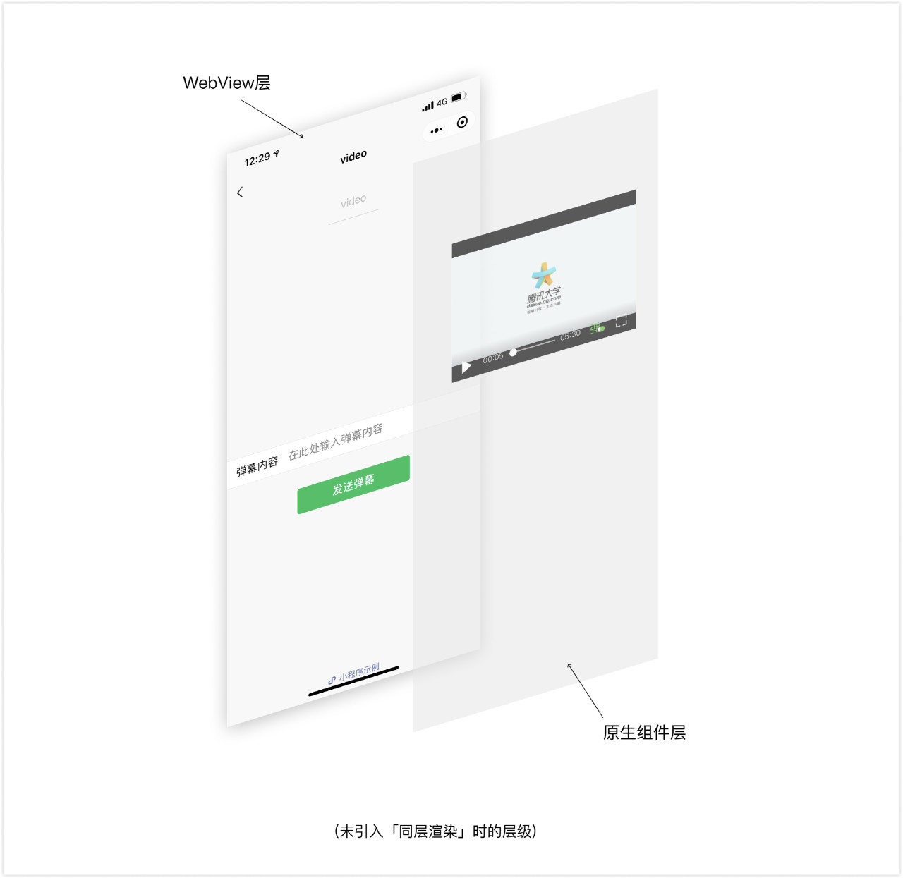
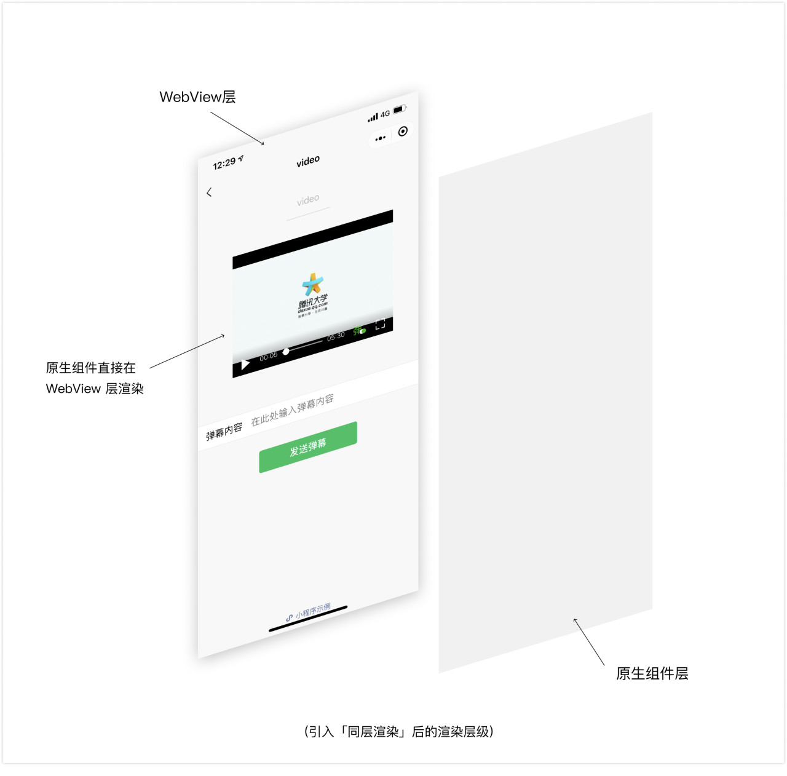
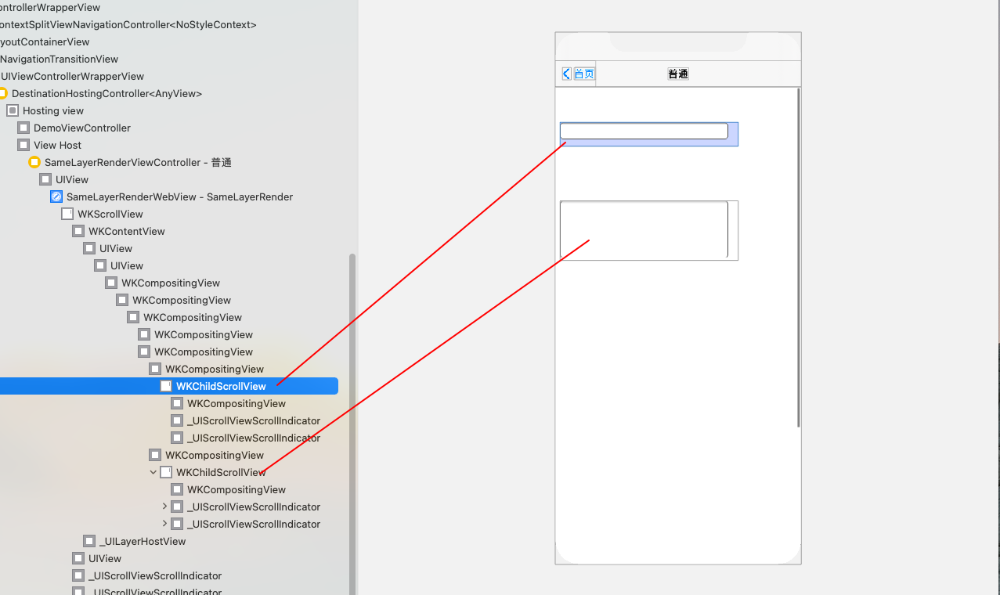
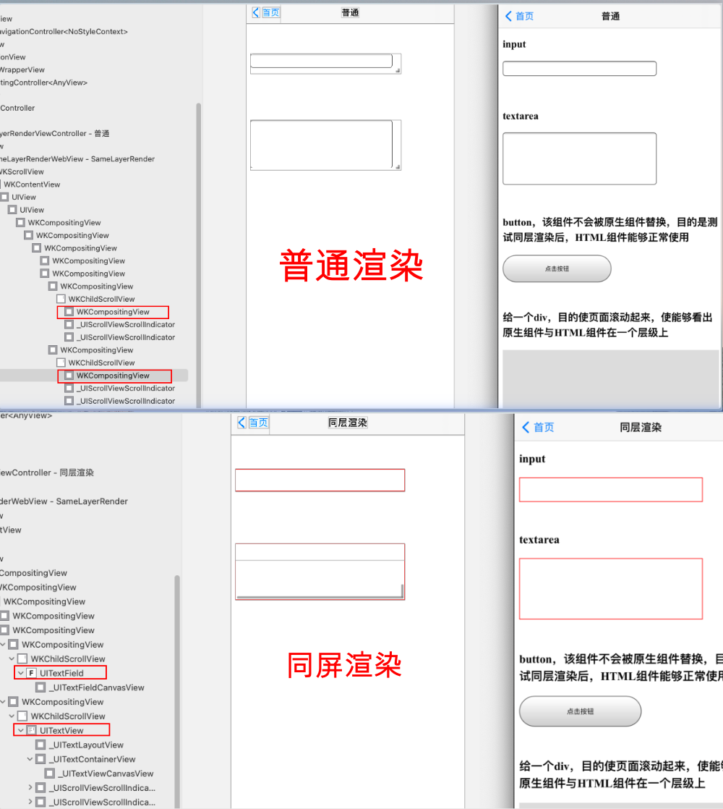

前言
可能作为 iOS 开发者，对同层渲染这个名词比较陌生，但是如果大家开发过小程序，应该对这个名词就不会陌生，因为小程序中有一类组件叫做原生组件（native-component），比如camera、video等，这类组件在渲染过程中最终会映射成下文提到的原生组件。
在正文开始之前，先给大家统一几个概念，方便后续的阅读。
- 原生组件：iOS、Android 等客户端 Native 组件，如 iOS 中的
UITextField、UITextView，Android 中的EditText、ListView等； - H5 组件：是指 HTML5 语言编写的 web 组件，如
<input/>、<textarea></textarea>等；
相比于 H5 组件，原生组件不仅可以提供 H5 组件无法实现的一些功能，还能提升用户体验上的流畅度（特别是对于音视频播放器而言），又因为减少了客户端代码与 WebView 通信的流程，降低了通信开销，简单来说，原生组件功能全、速度快、开销少；
应用及概念
任何技术的产生都是伴随着需求或问题，那么同层渲染的产生到底是解决什么问题呢？
我们上文已经提到原生组件比 H5 组件性能更好，所以说对于一些 H5 组件，我们希望其在客户端渲染时被映射成原生组件，那么问题来了：作为客户端来讲，我们一般会采用 WebView 加载 HTML，原生组件脱离在 WebView 渲染流程外，如果把 WebView 看成单独的一层，那么原生组件则位于另一个更高的层级。那么这样的层级就带来了一些问题：
- 原生组件的层级是最高的：页面中的其他组件无论设置 z-index 为多少，都无法盖在原生组件上；
- 部分 CSS 样式无法应用于原生组件；
- 原生组件无法在 scroll-view 等可滚动的 H5 组件中使用：因为如果开发者在可滚动的 DOM 区域，插入原生组件作为其子节点，由于原生组件是直接插入到 WebView 外部的层级，与 DOM 之间没有关联，所以不会跟随移动也不会被裁减。
未同层渲染的层级图如下图所示：

那么为了解决这个问题，便出来了同层渲染。其本质就是原生组件可以和 H5 组件可以在同一个层级上显示，使原生组件与 H5 组件可以随意叠加，去除层级限制。像使用 H5 组件一样去使用原生组件，设置组件的样式等等。
同层渲染的层级图如下图所示：

最后上一下淘系前端团队对于同层渲染的定义：
同层渲染是允许将 Native 组件和 WebView DOM 元素混合在一起进行渲染的技术，能够保证 Native 组件和 DOM 元素体感一致，渲染层级、滚动感受、触摸事件等方面几乎没有区别。
实现原理
本来只讨论 iOS 对于同层渲染的实现原理，对于 Android，大家可以参考相关链接中的《小程序同层渲染原理剖析》。
WKWebView 在内部采用的是分层的方式进行渲染，它会将 WebKit 内核生成的 Compositing Layer（合成层）渲染成 iOS 上的一个 WKCompositingView，这是一个客户端原生的 View，不过可惜的是，内核一般会将多个 DOM 节点渲染到一个 Compositing Layer 上，因此合成层与 DOM 节点之间不存在一对一的映射关系。
但是当我们把一个 DOM 节点的 CSS 属性设置为 overflow: scroll （低版本需同时设置 -webkit-overflow-scrolling: touch）之后，并且该 DOM 下有一个高度超过该 DOM 节点高度的子节点，WKWebView 会为该 DOM 节点生成一个
WKChildScrollView，与 DOM 节点存在映射关系。这是一个原生的 UIScrollView 的子类，也就是说 WebView 里的滚动实际上是由真正的原生滚动组件来承载的，WKWebView 这么做是为了可以让 iOS 上的 WebView 滚动有更流畅的体验。
根据 WKWebView 的该特性，我们便可以建立 H5 组件与原生组件之间的映射关系，并且保证原生组件与 H5 组件在同一个层级上。大致流程如下：
- 前端创建一个 DOM 节点，并设置其 CSS 属性为
overflow: scroll;，低版本上同时设置-webkit-overflow-scrolling: touch;，为该 DOM 下插入一个高度超过该 DOM 节点高度的子节点，这一点很重要，否则不会生成； - 前端传递给客户端查找到该 DOM 节点对应的
WKChildScrollView原生组件的必要信息； - 客户端根据前端传来的相关信息找到对应的原生组件，并将原生组件挂载到对应
WKChildScrollView节点上作为其子 View。

代码示例
根据上面的流程估计大家基本上已经有了实现思路，下面咱们一步步的给出关键的代码。
1、创建一个可以生成WKChildScrollView原生组件的 DOM 节点
1 | <div class="native_render native_render_input" native-render-type="input"> |
2、传递给客户端查找到该 DOM 节点对应的 WKChildScrollView 原生组件的必要信息
JS 与 Native 交互的方式有很多种，这里咱们选用 WKWebView 天然支持的 WKScriptMessageHandler 的方式。
1 | <script> |
3、客户端根据传来的信息找到对应的原生组件，并将原生组件挂载到该 WKChildScrollView 节点上
1 |
|
代码示例只是简单实现同屏渲染的流程，内部有很多需要优化的地方，希望大家多多指教，我自己先说几点吧。
- 替换的平滑过渡，不应出现痕迹；
- 目前 Dom 节点与 WKChildScrollView 的对应关系是通过该 DOM 节点在所在页面的索引值来对应的，这种方式是不合适的；
- 如何实现该组件在普通浏览器下显示成 H5 组件，在客户端有 SDK 支持下显示成原生组件，做到无缝切换；
- …
具体Demo示例可见SameLayerRender
效果对比

最后
最后，祝大家周末愉快！
Let’s be CoderStar!
相关链接